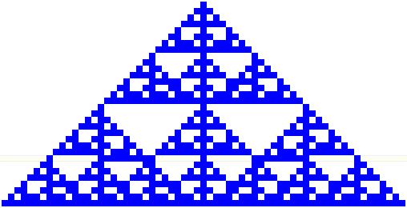

| 16. In order for the gasket to grow, we want to guarantee live cells stay alive. So the rule must contain the nbhd configs on the left. Adding the nbhd configs on the right allows some growth, enough to make a sort of gasket. | |||
| |||
| Here is the 31st generation. The initial cell is in the middle of the bottom line. | |||
|  | |||
| Can you find something closer to a gasket? |
Return to Homework 9 Practice.